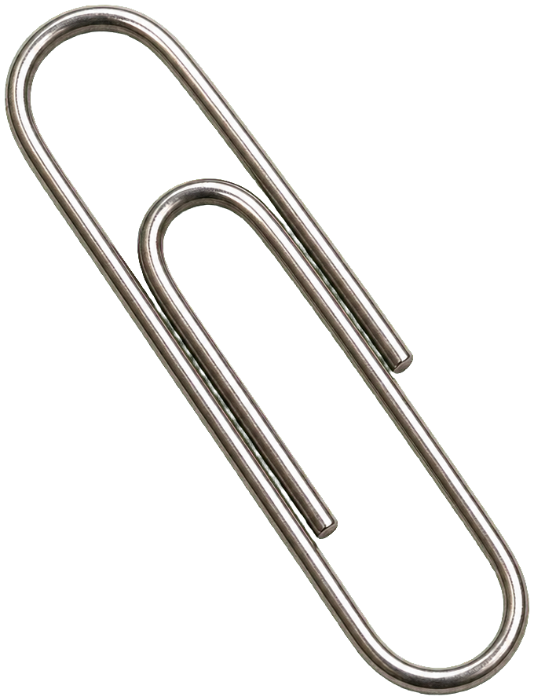
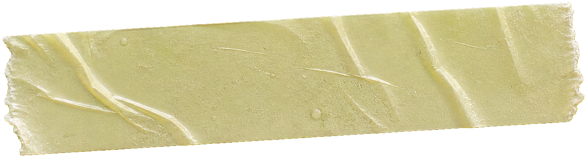
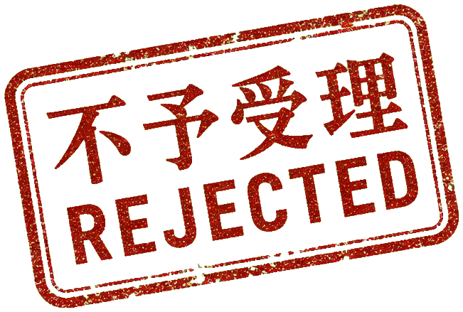
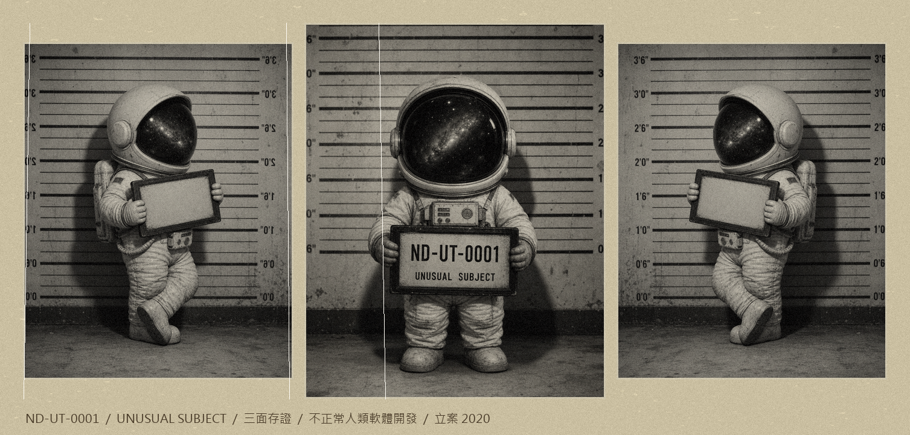

CASE ND-UT-0002
UNDER REVIEW
會動的網站不等於好網站：90% 的動效都在偷走你的生意
跑馬燈、自動輪播、會跳的數字——看起來很厲害，其實正在趕走準備掏錢的客人。
閱讀 6 分

NEST DIGITAL ABNORMAL OBSERVATION FILE ／ 異常觀察檔案
Unconventional Takes
我們把商業世界裡的怪現象——一件一件立案、解剖、公開。 這不是公司的官方說法，是我們腦袋裡那些不該說的真正在想的東西。
本期異常 TOP ANOMALY
每個來談的客戶都想要又便宜、又快、又好。我們的回答常讓人傻眼：這三個你只能挑兩個。 不是耍脾氣，是這一行的物理定律。這份檔案記下我們怎麼選案子、為什麼有些錢我們不賺。
結論能挑的客戶，比能接的案子重要。
OPEN FILE跑馬燈、自動輪播、會跳的數字——看起來很厲害，其實正在趕走準備掏錢的客人。

AI大家以為 AI 網紅就是套個假臉。錯了。值錢的是那套永遠不翻車、可無限複製的人設引擎。
轉型不是買一套貴的系統。多數公司真正卡住的，是三張手動 Excel 和一個沒人想接的流程。
每隔半年就有人喊 SEO 死掉。死的是灌關鍵字的內容農場，AI 時代反而更吃真材實料。

AD短期數字漂亮不代表你贏了。有些「高效」的打法，是在預支品牌的未來。

罪名一覽 CHARGES
一個會嚇到投資人的名字，背後是我們對這一行的整套態度。這是第一份檔案。
更多檔案陸續解密中 ／ MORE CASES DECLASSIFYING